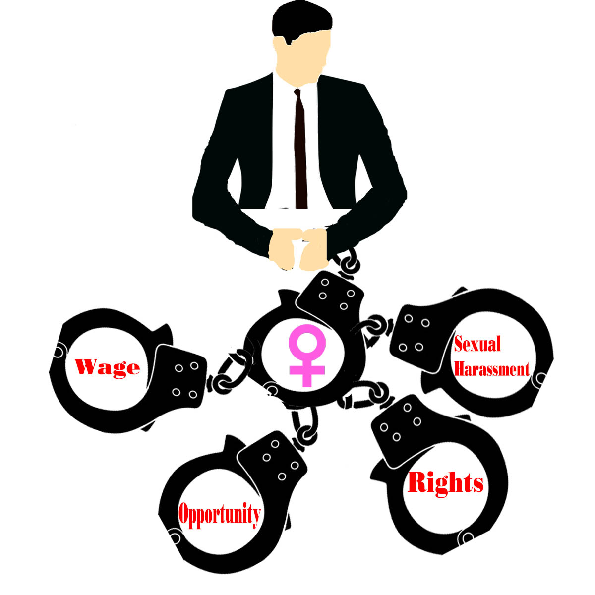
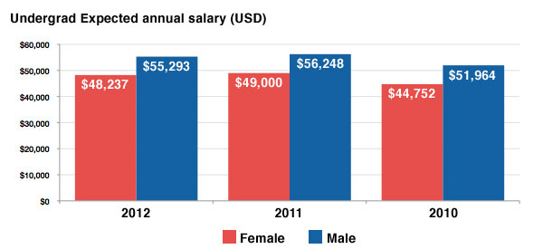

Awareness of Gender Inequality
My purpose for this website is to aware more people of gender inequality. How women are not treat equally to men. The obstacles that women face in America to get somewhere in life. I will be stating in formation on these issues. Then, some solution to help solve this problem. That way women have a fair, proper chance to get become successful.

One in five women have been sexually harassed in the workplace, poll shows
- Mostly 18-24 year old women have gotten sexually harassed by a man at least once or more times
- 58% of women do not report report being sexual assulted to their company
- Only 31% have acknowledged sexual harassment but, no action has been taken and only 4% of
companies have actually been removed the assultent from the company
source from:http://www.telegraph.co.uk/news/2017/10/25/two-five-women-have-sexually-harassed-workplace-poll-shows/

Gender Equality Fact or Alternative Facts
- Woman make 83 cents less than what a man makes
- Women are less likely to receive a promoted as a manager
- Less and less women are becoming part of our working class
source from: https://www.huffingtonpost.com/entry/gender-equality-facts-or-alternative-facts_us_5917de91e4b0bd90f8e6a630
What is holding Woman Back?
- Men are scared to lose power by a woman becoming a leader
- When a woman is pregnant they are seen as useless.So, they can not do much and they do not get pay for time off the job and its harder for them to work like they normally would because people judge them of having a kid. Is like a penalty for being pregnant "mother hood"
- When men employees give ideas at the job it often more noticed than a women even if it is the same idea
source from:https://www.wsj.com/articles/whats-holding-women-back-in-the-workplace-1443600242
14 Ways Women still are not Equal to Men
- Retired women are twice as likely as men to live in poverty because once women meet their retirement age men will have $11,000 more than women
- Woman of all ages are more likely than men to live below the poverty. More than 15.5% of women are more to likely to live in poverty in the U.S than men which is 11.9%. There is more than a billion women living in poverty
source from:http://www.marieclaire.com/politics/news/a15652/gender-inequality-stats/